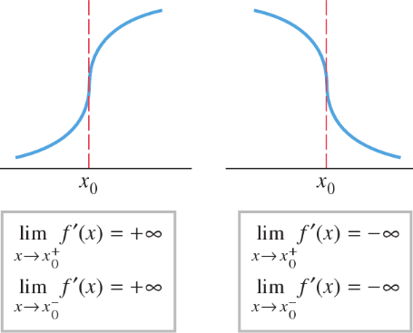

Concavity and the second derivative test
Definition. Say that f is a continuously differentiable function on (a,b) if it is a differentiable function and f': (a,b) ⟶ ℝ is a continuous function. The collection of all continuously differentiable functions on (a,b) is denoted by C1(a,b). Functions in C(a,b) are also called smooth functions. Now f' can also be differentiable, in which case we say that f is twice differentiable function. The second derivative is denoted by f''. If f'': (a,b) ⟶ ℝ is continuous, we say that f si twice continuosly differentiable function; denote the collection of all twice continuosly differentiable functions on (a,b) by C2(a,b). This continues with the definition of higher derivatives denoted by f(3), ..., f(n). If f(n) defined a continuous function, we say that f is n-times continuosly differentiable and we denote the space of all such functions on (a,b) by C(n)(a,b). If we can form all the derivatives f(n) for n ≥ 1, we say that f is infinitely differentiable and denote the space of all such functions as C(∞)(a,b). In some places in the literature the term "smooth function" is reserved for functions in C(∞)(a,b), where we have used the term for functions in C1(a,b). □
Example. Let
Note that f is continuous at every point included at x = 0 as lim_{x ⟶ 0} f(x) = 0 and f(0) = 0. Clearly f is differentiable at x ≠ 0. In fact f'(x) = 2x sin(1/x) − cos (1/x) when x ≠ 0. When x = 0, not that
so f is differentiable at x = 0, and f'(0) = 0. However, f is not continuosly differentiable on all of ℝ, it isn't true that lim_{x -> 0} f'(x) = 0, though it is on any open interval not containing 0. Since f is not continuos at 0, f is not twice differentiable. ■
In the last section we saw that Monotonicity test allows the classification of critical points of a function by studying the first derivative sign changes. We can apply the same test to f'(x) when f is a function twice differentiable. Let f: I ⟶ ℝ be a twice differentiable function
If f''(x0) ≥ 0; ⇐⇒ f' is increasing in I;
If f''(x0) ≤ 0; ⇐⇒ f' is decreasing in I.
When f satisfies a) f is said convex or concave upward.
When f satisfies b), f is said concave or concave downward.
Geometrically when f is convex, as x increases the slope of the tange line to the graph of f increases as well. As a consequence if a function is convex in an interval (a,b) its graph lies above the tangent line at every point x ∈ (a,b):
The tangent line to the graph of f at a point x0 has equation
y = f(x0) + f'(x0) (x − x0)
If f is convex, its graph never goes below that line; this means that
f(x0) ≥ f(x0) + f'(x0) (x − x0)
holds for every x with x0 ∈ (a,b). For concave function it is enough to reverse the inequality in the previous relation. The same condition also implies that every stationary point of a convex or concave function is a point of global minimum or maximum respectively.
Inflection points
Ovviamente il verso della concavità di una funzione piò cambiare: se una funzione f derivabile due vole in un intervallo [a,c] è concava in unverso in [a,b] e nel verso opposto in [b,c], il punto b di "transizione" tra le due concavità opposte si dice punto di flesso.
Attraverso un punto di flesso, la derivata seconda di f cambia segno. È quindi intuitivo che nel punto di flesso f'' si annulli.
Definition 5.9.3. An inflection point is a point where the graph of a function changes from convex to concave or vice versa. □
At the inflection point the sign of f'', changes, hence is necesaary that f'' is zero at the inflection point; This is a necessary condition but not sufficient, i.e.:
x0 inflection point ⇒ f''(x0) = 0
but the converse is not true, that is at points where f'' = 0, the second derivative test is inconclusive. For example consider f(x) = x4, f''(0) = 0, but the second derivative of x4, which is 12x2, does not flip signs at 0. On the other hand, the function f(x) = x3 is such that f''(0) = 0, and the second derivative which is 6x flips sign at x = 0.
Example 5.9.4. Let f(x) = x3. Since f'(x) = 3x2 ≥ 0 the function is increasinig over all ℝ, the stationary point at x = 0 cannot be an extreme point. Since f''(x) = 6x, the function is convex for x > 0 and concave for x < 0 and has a horizontal inflection point at x = 0. ■
The inflection point of the cubic function is known as a horizontal inflection point.
Definition 5.95 (Horizontal inflection point). Consider a differentiable function f(x). Assume that f'(x0) = 0, and that, in any neighborhood of x0 we have f(x) > f(x0) on one side of x0, and f(x) < f(x0) on the other. Then, the point x0 is called a horizontal inflection point. □
In the case the graph of a function that has a Vertical Tangent, its concavity changes when the graph intercept the vertical tangent. We call such a point a vertical tangent inflection point.
